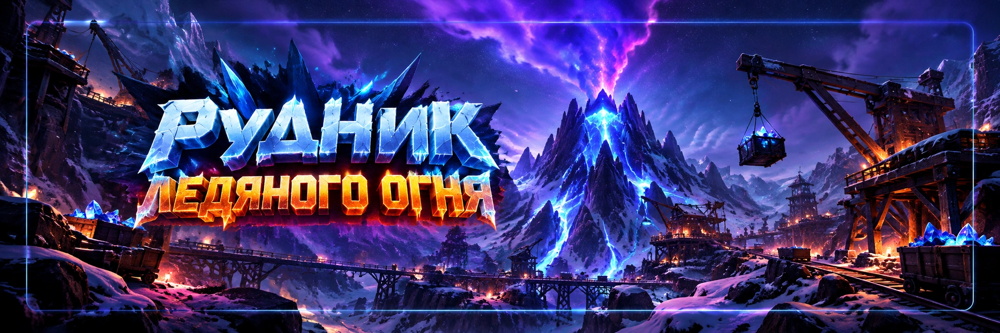

Рудник ледяного огня
Автор: SOVA58
30-минутное PvP-событие на сбор орихалка. Здесь важны быстрые навыки, движение по карте, жилы, выбросы и решение, стоит ли идти к Плавильне.
ПодробнееСвернуть
Рудник ледяного огня
Автор: SOVA58
30-минутное PvP-событие на сбор орихалка. Здесь важны быстрые навыки, движение по карте, жилы, выбросы и решение, стоит ли идти к Плавильне.
1️⃣ Первый навык → ПРАВО
+1500 орихалка за уничтоженного патруля. Для активного старта обычно выгоднее.
Пассивный приток орихалка. Более спокойный вариант.
2️⃣ Второй навык → ПРАВО
+25% скорости марша. Быстрее к патрулям, жилам и выбросам.
+12 000 к размеру марша. Полезнее для активного PvP.
3️⃣ Третий навык → ЛЕВО
+5000 орихалка за успешное занятие обычной жилы. Срабатывает с ограничением по частоте.
+5000 за неудачную попытку захвата. Нишевый вариант для игры через поражения в атаке.
4️⃣ Четвёртый навык → ЛЕВО
+15% эффективности добычи орихалка. Базовый выбор для стабильного набора очков.
-30% времени восстановления героев после поражения. Для активных боёв.
5️⃣ Пятый навык → ПРАВО
Активный бонус +50% к скорости добычи на 60 секунд, перезарядка 5 минут. Базовый выбор для сбора; активируйте перед отправкой отрядов на жилы.
Боевой активный навык на 60 секунд с перезарядкой 5 минут. Полезнее тем, кто идёт драться за центр и Плавильню.
⚔️ Начало боя
Первые минуты не стоит просто сидеть на жиле. Основная цель: быстро набрать опыт с патрулей и открыть навыки.
- ⚔️ сначала патрули;
- 🌲 сразу открываем навыки;
- 🪨 жилы берём между походами.
⚔️ Патрули
Патрули дают опыт Рудника. После первого правого навыка каждый уничтоженный патруль ещё и приносит дополнительный орихалк.
После победы над охраной жилы могут появиться отдельные кучки орихалка. Их стоит собирать: для сбора припасов можно выделить отдельный отряд, не теряя время основных походов на патрулей.
В начале боя патрули особенно ценны, потому что ранние навыки работают на вас все оставшиеся минуты.
🪨 Обычные жилы
Чем выше уровень жилы, тем выше добыча, но тем больше конкуренция.
Не обязательно любой ценой идти в центр. Спокойная жила рядом иногда приносит больше, чем дальний марш, драка и ожидание восстановления.
🔥 Выбросы
Это один из самых важных источников очков. К ним лучше заранее освобождать марши.
🔥 первая серия: примерно 20:00 / 19:00 / 18:00
🔥 вторая серия: примерно 10:00 / 9:00 / 8:00
Если в игре появляется предупреждение, ориентируйтесь прежде всего на него.
🚀 Телепорт
Не тратьте телепорт просто потому, что стартовая точка не понравилась.
- перед выбросами;
- если закончились патрули;
- если рядом слишком сильный соперник;
- перед переходом к Плавильне.
🏭 Плавильня
Ближе к концу события Плавильня может дать большой дополнительный результат за удержание.
Но если вас выбивают почти сразу, не нужно тратить половину боя на бессмысленные атаки. Продолжайте брать жилы, патрули и оставшийся безопасный сбор.
👑 Для сильного игрока
После второй серии выбросов можно оценить Плавильню и перейти к борьбе за центр.
Для активного PvP ветка навыков может отличаться от базовой. Базовая схема П → П → Л → Л → П рассчитана прежде всего на стабильный набор очков.
🛡️ Если вы слабее
Рабочая схема:
Не обязательно лезть в центр. Грамотная игра по окраинам часто приносит больше, чем постоянные поражения.
💬 Опыт игроков
- ✅ Первые минуты лучше тратить на патрули.
- ✅ Скорость марша обычно полезнее дополнительного размера похода.
- ✅ Третий левый навык нужно использовать активно.
- ✅ Выбросы важнее обычной добычи.
- ✅ Слабому игроку не обязательно идти в центр карты.
- ✅ Каждый марш должен либо приносить опыт, либо добывать орихалк.
🚫 Частые ошибки
- ❌ Выбрать навыки наугад.
- ❌ Забыть схему П → П → Л → Л → П.
- ❌ Сразу сесть на жилу и игнорировать патрулей.
- ❌ После третьего навыка сидеть на одной жиле весь бой.
- ❌ Пропускать выбросы.
- ❌ Тратить телепорты без цели.
- ❌ Атаковать игрока, которого невозможно победить.
✅ Быстрая схема на 30 минут
🌲 навыки
💰 бонус